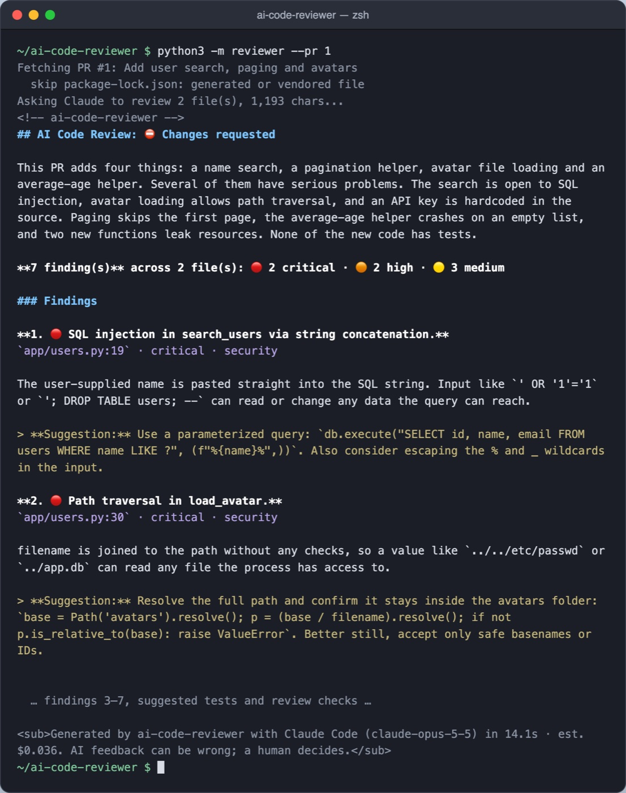
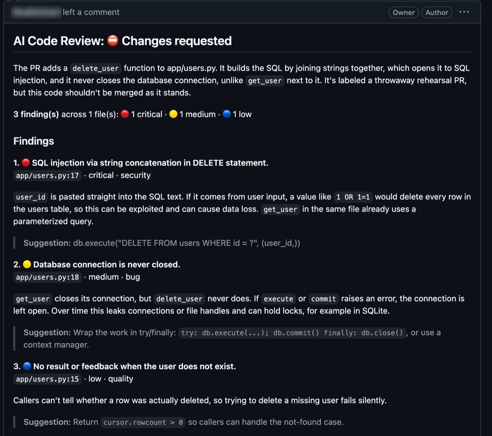
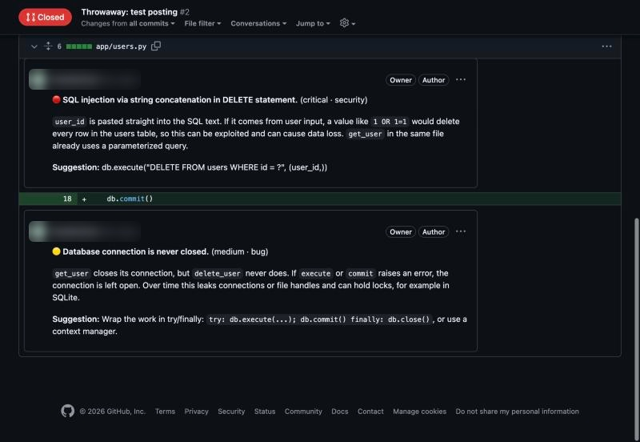
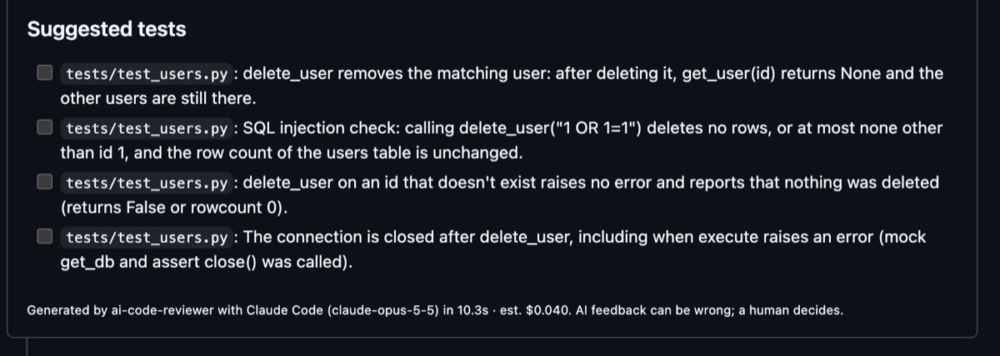
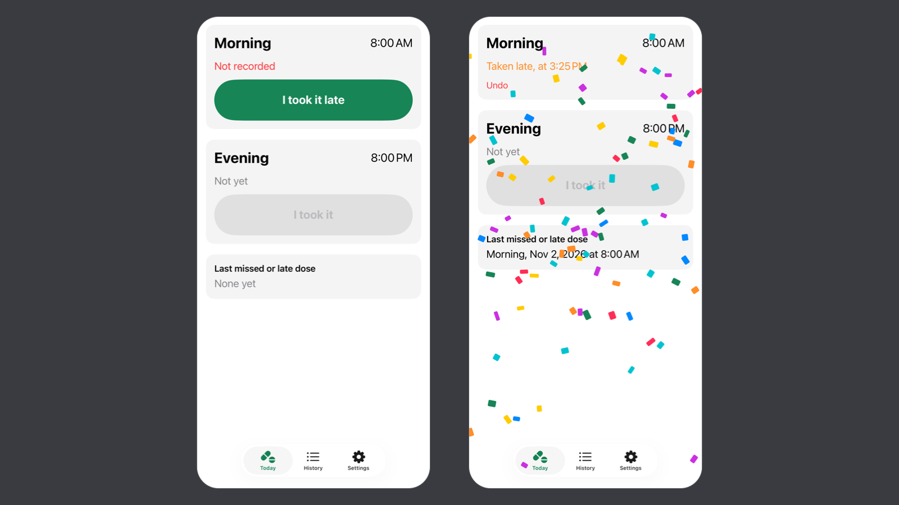
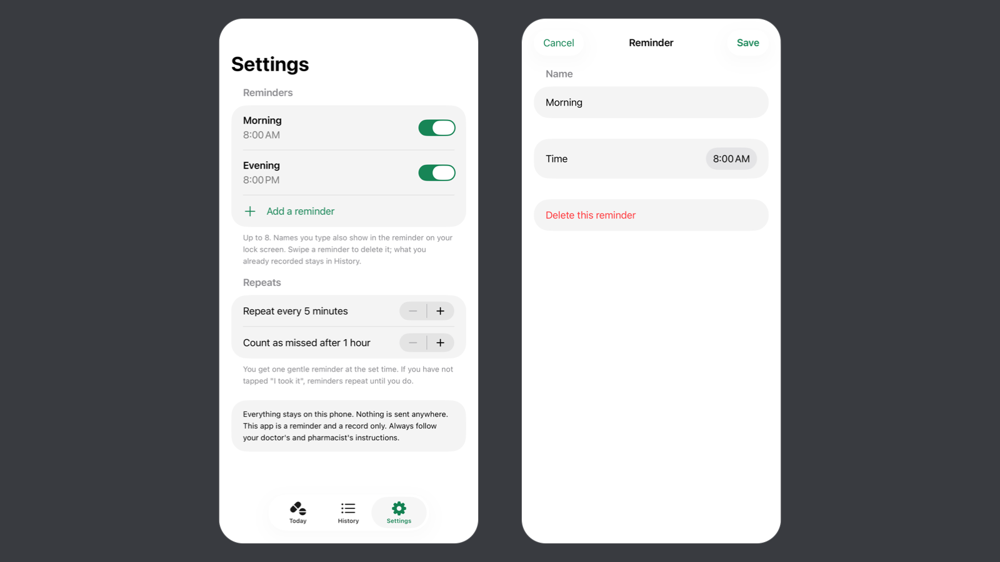
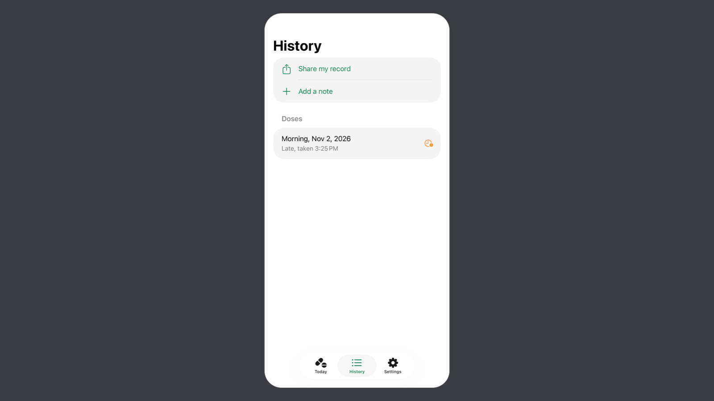

University of Washington
Expected Jun 2027B.S., Computer Science and Systems · Minor in Business Administration
Current coursework: TCSS 490, Generative AI and Software Development (Autumn 2026)
I'm a Computer Science and Systems student at the University of Washington, minoring in Business Administration and graduating in June 2027.
I like building tools that solve a real problem for a real person. Before writing any code for Doses, I asked my mom what she needed, then watched her use it and fixed what confused her. I use AI coding assistants like Claude Code to build faster, and I check what they produce.
Alongside school, I work as a Patient Access Representative at Conifer Health Solutions, handling patient and insurance data in Epic. I'm looking for a software development internship where I can keep building useful things.
B.S., Computer Science and Systems · Minor in Business Administration
Current coursework: TCSS 490, Generative AI and Software Development (Autumn 2026)
Associate's, Computer Science and Systems
Developer tool · AI
A command-line tool that reviews a GitHub pull request or git diff with Claude Code running headless, reports bugs, security problems and missing tests, and posts them as inline comments on the PR. My own code checks every finding against the diff and drops any that cite a file or line that was never shown.




What I learned: keeping the model's job small, one call with no tools, made it easy to tell whether a bad review was the model's fault or my code's. Structured output was not enough on its own: the model can return valid JSON that points at a line that does not exist, so the checks mattered as much as the prompt.
iPhone app · Built for a real user
An iPhone app I built for my mom, who takes medication twice a day. I interviewed her first, then built it around her answers: one reminder that gets firmer if she misses a dose, a clear sign of whether she already took it, and a history she can show her doctor. Nothing leaves the phone, and the logic is covered by 20 unit tests.



What I learned: when I watched my mom use it, she tapped "I took it" by accident and could not see how to take it back, because the small red Undo text did not look like a button. I made it a full-width "Undo" button. Something that looks obvious to me is not obvious to others, so next time I would test with her from the start. She told me it helped her keep track of her doses and that the reminders came at the right times.
Discord bot
A bot that plays music in Discord voice channels through slash commands (/play, /skip, /pause, /resume, /queue, /stop). It searches YouTube with a SoundCloud fallback, turns Spotify tracks and playlists into playable queues, and prefetches the next song for faster starts. Runs on macOS and Windows.
What I learned: Spotify audio cannot be streamed, so the bot has to find the same song on YouTube, and early versions often played the wrong version. I made it prefer saying it could not find a song over playing the wrong one, and match tracks by length. I also learned to test AI-written changes in Discord myself before pushing them.
Team project
A Java application, built in an Agile team, that simulates autonomous drones, tracks their telemetry (location, altitude, speed, heading, battery) and flags anomalies such as sudden GPS jumps, unsafe movement and low battery, with a monitoring dashboard. I worked on the MVC architecture, telemetry generation, anomaly detection, SQLite integration, the dashboard and JUnit tests.
© 2026 Ibrahim Cartan